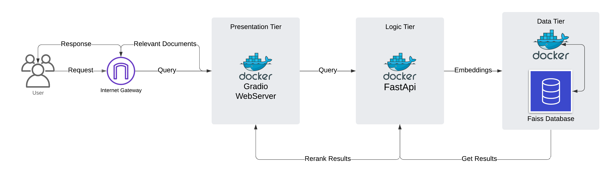

CrisisSum: A Crisis Event Data Retrieval Platform
Overview

CrisisSum is a containerized platform designed for fast and efficient retrieval, ranking, and summarization of crisis-related events. It combines BM25-based retrieval, FAISS indexing, and embedding-based re-ranking to provide highly relevant results along with detailed evaluation metrics.
This system leverages:
- FastAPI for building efficient API layers
- FAISS for fast vector similarity searches
- Docker Compose for modular deployment and orchestration
Key Features
- Multi-Stage Retrieval:
- BM25 for initial ranking
- FAISS-based embedding search
- Re-ranking with Sentence-Transformers
- BM25 for initial ranking
- Evaluation Metrics:
- ROUGE Scores
- Cosine Similarity
- Jaccard Similarity
- ROUGE Scores
- Containerized Architecture:
- Backend: FAISS search server
- App Layer: FastAPI-based processing and re-ranking
- Frontend: Interactive UI for querying and viewing results
- Backend: FAISS search server
- Comprehensive Test Suite:
- Test coverage with
pytestfor all core functionalities
- Centralized test coverage in
test_main.py
- Test coverage with
Project Structure
CrisisSum/
│
├── CODE_OF_CONDUCT.md # Code of Conduct
├── CONTRIBUTING.md # Contribution Guidelines
├── LICENSE # MIT License
├── docker-compose.yml # Docker Compose for deployment
├── data/ # Input Dataset (combined_data.csv)
├── initial_cleaned_data/ # Cleaned and partitioned datasets
│
├── src/ # Source Code
│ └── crisissum/
│ ├── backend/ # FAISS backend service
│ ├── app_layer/ # FastAPI application layer
│ ├── frontend/ # Frontend service
│ ├── preprocessing/ # Data cleaning and FAISS index generation scripts
│ ├── retrieval/ # Retrieval utilities
│ └── __init__.py
│
├── tests/ # Unit and Integration Tests
│ └── test_main.py # Comprehensive test suite
│
├── pyproject.toml # Project Dependencies
├── requirements.txt # Python Requirements
└── README.md # Project Overview Quick Start
Prerequisites
- Install Docker and Docker Compose.
- Optional: Install Python 3.10+ for local testing and development.
- Git LFS
Using Git LFS (Large File Storage)
This project includes large files like datasets (CSV/Parquet) and FAISS indices, which are required to run the platform. To manage these files efficiently and ensure a lightweight repository, we use Git LFS (Large File Storage).
Why Git LFS?
- Handles large files such as
.csv,.parquet, and.indexfiles.
- Ensures that these critical files are stored and retrieved efficiently.
- Keeps repository clones lightweight while still enabling Docker containers to access the necessary files.
Setup Git LFS
Install Git LFS:
Follow the instructions for your operating system:
Git LFS Installation Guide.Clone the Repository with LFS Files:
If you’re cloning the project for the first time, make sure to fetch the LFS files:
git clone https://github.com/DSAN6700-24Fall/final-project-five-guys.git cd final-project-five-guys git lfs pull
Files Tracked by Git LFS
- Dataset Files:
data/combined_data.csv
initial_cleaned_data/cleaned_crisisfacts_data.csv
initial_cleaned_data/cleaned_crisisfacts_data.parquet
- FAISS Index Files:
src/crisissum/backend/faiss_indices/*.index
Ensure Docker Access to LFS Files
To run the Docker containers successfully, ensure that Git LFS files are fetched locally before starting the services:
git lfs pull
docker-compose up --buildVerify LFS Files
You can verify that large files are tracked by Git LFS:
git lfs ls-filesThis command will display all files currently being managed by Git LFS.
Run the Project
Clone the Repository:
git clone https://github.com/DSAN6700-24Fall/final-project-five-guys.git cd final-project-five-guysStart All Services:
docker-compose up --buildAccess the Services:
- Backend: http://localhost:8001 (Debug Only)
- App Layer: http://localhost:8000 (Debug Only)
- Frontend: http://localhost:7860
🚨 ONLY ACCESS THE FRONTEND — The Backend and App Layer are internal services and should not be accessed directly unless debugging.
- Backend: http://localhost:8001 (Debug Only)
Testing
Run all tests locally to ensure full code coverage:
Install Dependencies:
pip install -r requirements.txtRun Tests:
pytest tests/
Test Coverage
The central test_main.py includes coverage for:
- Text preprocessing (cleaning inputs)
- Metrics computation (ROUGE, Cosine Similarity, Jaccard Similarity)
- Health check endpoint
- Query endpoint with mock FAISS responses
Data Preprocessing
We have cleaned and preprocessed data, for FAISS, if you dont have a GPU, Builing an index and preprocessing data takes approximately 50+ hours. For this reason, do not rerun the preprocessing script or building a faiss index. All of this is already included. but if you really want to, then you can, but it might not work as this is all GPU specific code.
1. Combine CSV Files
Script: src/crisissum/preprocessing/combine_csv.py
This script combines multiple CSV files from a directory into a single output CSV file.
Usage:
python src/crisissum/preprocessing/combine_csv.py --input_dir /path/to/input_dir --output_file /path/to/output.csvArguments: - --input_dir: Directory containing the input CSV files. - --output_file: Path to save the combined CSV file.
Example:
python src/crisissum/preprocessing/combine_csv.py --input_dir data/cleaned_crisisfacts/ --output_file data/combined_data.csv2. Preprocess Text Data
Script: src/crisissum/preprocessing/preprocessing.py
This script preprocesses text data by tokenizing, removing stopwords, and extracting entities.
Usage:
python src/crisissum/preprocessing/preprocessing.py --input_file /path/to/input.parquet --output_file /path/to/output.csv --text_column textArguments: - --input_file: Path to the input Parquet file. - --output_file: Path to save the preprocessed CSV file. - --text_column: Column name containing the text to preprocess.
Example:
python src/crisissum/preprocessing/preprocessing.py --input_file data/cleaned_crisisfacts_data.parquet --output_file data/preprocessed_crisisfacts_data.csv --text_column text3. Populate FAISS Index
Script: src/crisissum/preprocessing/populate_faiss_index.py
This script creates and populates FAISS indices (e.g., float32) for fast similarity searches.
Usage:
python src/crisissum/preprocessing/populate_faiss_index.py --data_file /path/to/data.csv --index_dir /path/to/index_dirArguments: - --data_file: Path to the input data file (CSV). - --index_dir: Directory to store the FAISS indices.
Example:
python src/crisissum/preprocessing/populate_faiss_index.py --data_file data/combined_data.csv --index_dir data/faiss_indices/4. Dimensionality Reduction and Clustering
Script: src/crisissum/dimensionality_reduction.py
This script performs dimensionality reduction (PCA and t-SNE) and clusters data using KMeans.
Usage:
python src/crisissum/dimensionality_reduction.py --input_file /path/to/preprocessed.csv --text_column preprocessed_textArguments: - --input_file: Path to the preprocessed CSV file. - --text_column: Column name containing the preprocessed text.
Example:
python src/crisissum/dimensionality_reduction.py --input_file data/preprocessed_crisisfacts_data.csv --text_column preprocessed_text5. Clustering Analysis
Script: src/crisissum/clustering.py
This script analyzes clusters using KMeans and DBSCAN.
Usage:
python src/crisissum/clustering.py --input_file /path/to/preprocessed.csv --text_column preprocessed_text --n_clusters 5Arguments: - --input_file: Path to the preprocessed CSV file. - --text_column: Column name containing the preprocessed text. - --n_clusters: Number of clusters for KMeans (default: 5).
Example:
python src/crisissum/clustering.py --input_file data/preprocessed_crisisfacts_data.csv --text_column preprocessed_text --n_clusters 5Notes
- Make sure all dependencies are installed as specified in the
requirements.txtorpyproject.tomlfiles. - Replace
/path/to/...with the actual paths in your environment.
Contributing
We welcome contributions! To get started:
1. Read the CONTRIBUTING.md.
2. Fork the repository.
3. Create a feature branch (feature/your-feature).
4. Submit a pull request!
Please follow the CODE_OF_CONDUCT.md when contributing.
License
This project is licensed under the MIT License. See LICENSE for details.
Acknowledgments
This project leverages the following tools and libraries:
- FAISS: Efficient similarity search
- FastAPI: Modern API development
- Sentence-Transformers: For embeddings
- BM25: Keyword-based retrieval
- Docker: Containerization and deployment
Feel free to create issues for bugs, suggestions, or improvements! 🚀